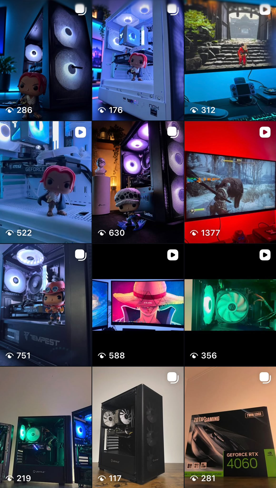
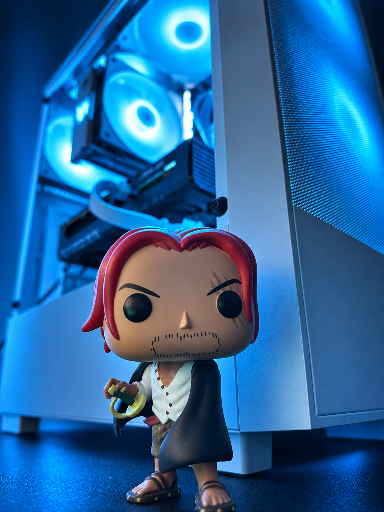

Comunicação em idiomas
Facilidade de diálogo e escrita em inglês e espanhol.
Experiência. Formação. Perspetiva.
Um percurso na Força Aérea Portuguesa.
Uma nova etapa em Engenharia Informática.
Estudante de Engenharia Informática na UPBeja, em regime de trabalhador-estudante, com o objetivo de trabalhar em automação, na ligação entre hardware e software.
Experiência profissional
Força Aérea PortuguesaFormação em curso
Engenharia Informática · UPBeja01 / Sobre mim
O meu percurso começou no apoio psicossocial e desenvolveu-se na área técnica da Força Aérea Portuguesa.
Da formação em Armamento e Equipamentos de Voo às funções de subchefia no Subsetor de Combustíveis, reuni experiências de formação, trabalho e participação em contextos internacionais.
Atualmente, frequento a Licenciatura em Engenharia Informática na UPBeja, conciliando os estudos com a atividade profissional.
O meu objetivo é entrar no mercado de trabalho da automação, em funções que relacionem hardware e software. Pretendo desenvolver o meu percurso nesta área, aplicando a formação em Engenharia Informática à ligação entre componentes físicos e programação.
02 / Percurso
Formação académica, experiência militar
e vivências internacionais.
12.º ano
Formação com experiências de estágio internacional:
Força Aérea Portuguesa
Formação de auxiliar de mecânico na especialidade de Mecânico de Armamento e Equipamentos de Voo.
Base Aérea n.º 11 · Beja
Formação na aeronave P3-C, Fase A.
Força Aérea Portuguesa
Formação de mecânico na especialidade de Mecânico de Armamento e Equipamentos de Voo.
Base Aérea n.º 11 · Beja
Participação em missões internacionais nos seguintes locais:
Base Aérea n.º 11 · Beja
Funções de subchefia do subsetor. Participação em exercícios conjuntos militares de nações da NATO:
UPBeja
Frequência da licenciatura em regime de trabalhador-estudante nos anos letivos de 2024/2025, 2025/2026 e 2026/2027.
03 / Competências
Programação, competências transversais
e experiência de coordenação.
Competências técnicas
Conhecimentos nas seguintes linguagens:
Facilidade de diálogo e escrita em inglês e espanhol.
Experiência em funções de subchefia no Subsetor de Combustíveis.
Estágios, missões e exercícios em diferentes contextos de formação e trabalho.
Competências desenvolvidas e reforçadas ao longo da formação militar.
A formação militar desenvolveu a minha capacidade de comunicar no desempenho das tarefas e funções.
Reforçou a disciplina na forma como encaro e executo o trabalho.
Desenvolvi uma atitude de rigor na execução das tarefas e no cumprimento das funções.
Valorizo o cuidado e a qualidade do trabalho realizado, com brio no desempenho das minhas funções.
Adapto-me a diferentes contextos, tarefas e formas de trabalhar, com disponibilidade para aprender.
04 / Projetos
Tenho um gosto pessoal pela montagem e preparação de PCs. Gosto de trabalhar diretamente com os componentes e de acompanhar o processo até o computador estar pronto a utilizar. É uma forma prática de explorar a relação entre hardware e software.

Ampliar imagem
Ampliar fotografia05 / CV & apresentação
Duas formas de conhecer
o meu perfil profissional.
Curriculum Vitae
Formação, experiência profissional e competências no meu CV corporativo em PDF.
Vídeo de apresentação
Apresentação pessoal · 56 segundos
Não foi possível carregar o vídeo. Podes usar a ligação abaixo para o descarregar.
06 / Contactos
Encontra o meu perfil e acompanha os próximos projetos.
Ligação disponível em breve.
Montagem de PCs e trabalho em hardware.